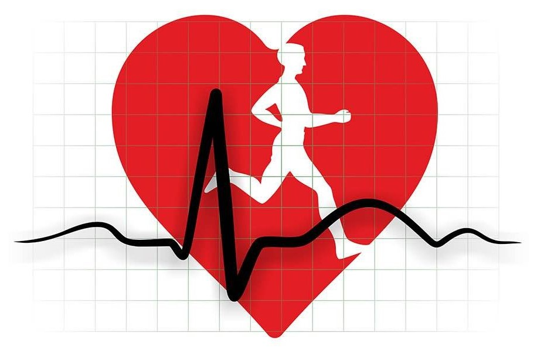
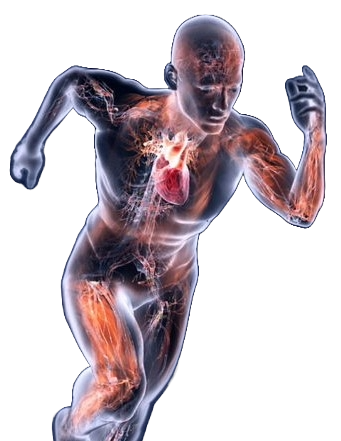

L'effetto dello sport
nella circolazione sanguinea

Praticando sport e svolgere esercizio fisico regolare permetta al cuore di irrobustirsi eresistente alla fatica.

Il cuore si adatta al lavoro fisico aumentando la frequenza cardiaca e la gittata sistolica.
Durante lo svolgimento di attività fisica, una maggiore quantità di sangue viene pompata agli organi, questo avviene grazie all'aumento della frequenza cardiaca e della forza di contrazione. L'aumento è dovuto alla maggiore necessità di assorbire ossigeno ed espellere anidride carbonica.
L'esercizio fisico prolungato nel tempo fa avvenire un rafforzamento del cuore, con una diminuzione dei valori della frequenza dei battiti, a riposo e non. I cambiamenti che avvengono portano benefici sull'efficienza del sistema cardiocircolatorio e sul benessere psicofisico.
L'attività aerobica incrementa il carico di lavoro del cuore e dei polmoni, determinando un vero e proprio allargamento del muscolo cardiaco. Allargandosi il cuore migliora la forza di contrazione, rendendo possibile pompare una quantità di sangue maggiore, a beneficio della circolazione. È per questo che l'esercizio fisico è uno degli elementi più importanti per ridurre il rischio cardiovascolare.

La frequenza cardiaca umana normale in un soggetto adulto a riposo è compresa tra i 60 e i 100 battiti per minuto (bpm). Con "a riposo" si intende un soggetto che è seduti o rilassati da almeno 10 minuti.
Un metodo per calcolare la frequenza cardiaca massima di allenamento consiste nel sottrarre a 220 la propria età, bisogna considerare però che questo metodo è alquanto generale, potrebbe quindi non essere esatto. Questi dati sono infatti influenzati da numerosi fattori come la genetica, lo stress, lo stato psicologico, la dieta, l'assunzione di farmaci, lo stato ormonale, l'ambiente circostante, malattie e altro.
Le persone con una vita sedentaria corrono il rischio di incombere in malattie cardiovascolari. Uno studio ha rivelato che le persone che fanno poco movimento hanno un rischio doppio di avere un attacco cardiaco rispetto a persone fisicamente attive, questa possibilità si alza di tre volte quando si considerano le persone decedute a causa di un attacco.
Anche se l'attività fisica porta benefici all'organismo, può portare (come tutto) a una grave conseguenza se praticato in eccesso. Questa conseguenza è detta sindrome da sovrallenamento, la quale si verifica nel caso che lo stress accumulato da un atleta superi la sua capacità di recupero.
Fra i sintomi principali troviamo il calo del rendimento atletico, una forte stanchezza che non passa neanche a riposo, insonnia, indolenzimento muscolare, sbalzi di umore e ansia.